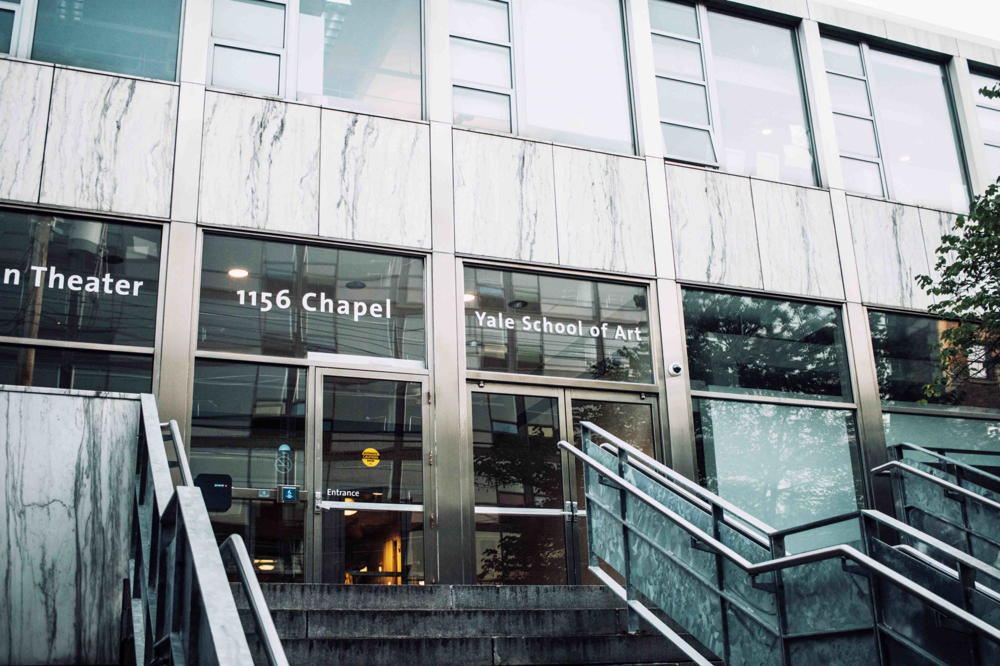

×
Yale MFA
The Yale School of Art is a Graduate School that confers Master of Fine Arts degrees in Sculpture, Painting/Printmaking, Photography, and Graphic Design.

Our Mission
The mission of the Yale School of Art is to provide students with intellectually informed, hands-on instruction in the practice of an array of visual arts media within the context of a liberal arts university.
A full-time facultry of working artists in conjunction with a diverse cross-section of accomplished visiting artists collaborate to design a program and foster an environment where the unique talents and perspectives of individual students can emerge and flourish.

Program Areas
Photography
Photography is a two-year program of study admitting ten students a year. Darkroom, studio, and computer facilities are provided. Students receive technical instruction in black-and-white and color photography as well as nonsilver processes and digital image production.
LEARN MORE
Sculpture
The sculpture program offers students the opportunity to develop their work in a supportive environment consisting of critical feedback in a broad array of diverse voices. The field of sculpture includes a varied collection of working methods and outcomes—one set of tools is not privileged over another—creating a healthy and experimental program that mirrors the issues facing artists outside of the institution.
LEARN MORE

Graphic Design
The graphic design program focuses on the development of a cohesive, investigative body of work, also known as the student’s thesis. At Yale, the graphic design thesis is conceived as a loose framework within which each student’s visual method is deployed across many diverse projects during the two-year course of study.
LEARN MORE
Painting & Printmaking
Instruction in the program is rooted in the investigation of painting as a unique genre with its own complex syntax and history. Within this setting, the program encourages diversity of practice and interpretation, innovation, and experimentation.
LEARN MORE
Photography
Photography is a two-year program of study admitting ten students a year. Darkroom, studio, and computer facilities are provided. Students receive technical instruction in black-and-white and color photography as well as nonsilver processes and digital image production.LEARN MORE
Sculpture
The sculpture program offers students the opportunity to develop their work in a supportive environment consisting of critical feedback in a broad array of diverse voices. The field of sculpture includes a varied collection of working methods and outcomes—one set of tools is not privileged over another—creating a healthy and experimental program that mirrors the issues facing artists outside of the institution.LEARN MORE
Graphic Design
The graphic design program focuses on the development of a cohesive, investigative body of work, also known as the student’s thesis. At Yale, the graphic design thesis is conceived as a loose framework within which each student’s visual method is deployed across many diverse projects during the two-year course of study.LEARN MORE
Painting & Printmaking
Instruction in the program is rooted in the investigation of painting as a unique genre with its own complex syntax and history. Within this setting, the program encourages diversity of practice and interpretation, innovation, and experimentation.LEARN MORE

MFA APPLICATIONS FALL 2020 OPEN:
APPLY

 |
|||
Yale School of Art |
Login |
Newsletter |
About |